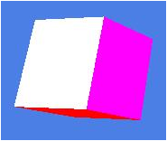
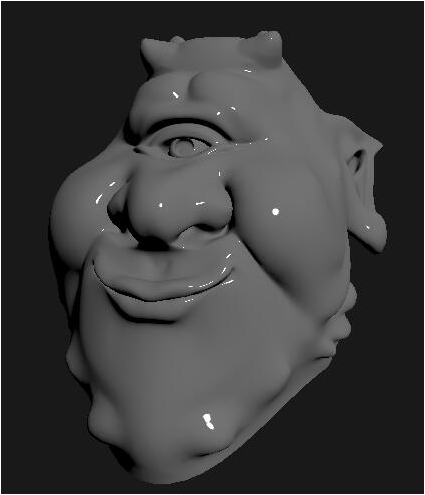

术语表（Terminology）¶
所有术语会被根据已有内容自动生成
图形学术语¶
Artifacts¶
Artifacts是图形学上的一个概念，或者说是一个梗，表示了一切在图形学上的错误，异常，不希望看到的结果，看上去不对的效果以及各种瑕疵。
Aliasing Artifacts¶
采样而导致的走样（Aliasing Artifacts）会导致很多现象，比如：
- 锯齿（Jaggies，对空间进行采样）
- 摩尔纹（Moire，对图像进行采样）
- 转轮效应（一块转轮上产生视觉上的不同转速，对时间进行采样）
信号处理术语¶
带限信号¶
频谱（傅里叶变换）在某个频率范围内有限的信号，即存在最高频率B，使得所有高于B的频率分量为零。
奈奎斯特频率¶
采样频率必须大于信号最高频率的两倍，这个最小采样频率称为奈奎斯特频率。
理想滤波器¶
频率响应在通带和阻带之间有突变，无过渡带的滤波器。与之相对的是实际滤波器，它存在过渡带和通带波纹。
示例图片¶
几何走样¶

渲染走样¶
